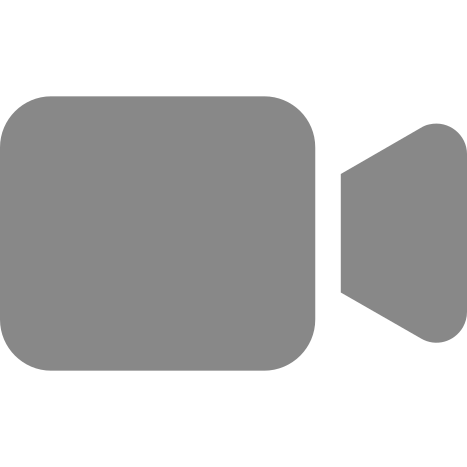
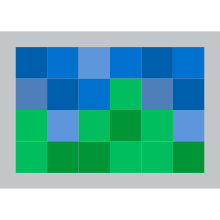

ROS 2
Is Here
Mar. 8th 2018
Dirk Thomas
ROS-Industrial Americas Annual Meeting 2018,
San Antonio, Texas, USA
ROS 2 - Why
- ROS 1 is great!
- But there are some things
which are "improvable"...
What is the same, what is different
- Same concepts
- Nodes, messages, publishers, subscribers, services, ...
- Command line as well as graphical tools
- Different []
- Middleware interface []
- Modern technologies: CMake, C++ 14, Python 3.5, etc.
- Address design flaws:
- No crawling of the FS at runtime (ament resource index)
- Choose process layout at deploy time (node vs. nodelet)
- ...
See the slides / video from the ROSCon 2015 presentation for more information.
How to roll out "the new thing"
- Each ROS release: add new, deprecate old, remove ancient
- That requires every package to move forward
- Add new stuff in parallel in a ROS 1 distribution
- Fragmentation and not transparent:
some packages useroscpp, othersroscpp2
- Fragmentation and not transparent:
- Release a separate distribution
- Each package needs to opt-in when it wants to
See this design article for more information.
ROS 2 Ardent Apalone
released on Dec. 8th 2017
See release page for more information.
Where do we want to be?
Plug-n-play Sensors

- Publisher:
/image - Parameter:
framerate,resolution - Server:
/set_parameter
Plug-n-play Actuators
- Subscriber:
/gripper_cmd

Control System
→
 →
→
→
- Subscribers:
/image_left,/image_right - Publisher:
/gripper_cmd - Components:
preprocessing imagefeature extractiongripping decision
External Systems
 ↔
↔
- Subscriber: e.g.
/gripper_cmd - Client: e.g.
/feature_extract/set_parameter
External Systems

←
 ←
←
←
- Subscriber:
/preprocessed_image
Outlook
- New releases every ~6 months
- in June 2018: Bouncy Bolson
- Support two releases at a time (same as in ROS 1, no LTS yet)
- Major bug fixes
- Keep platforms working which have rolling dependencies (Mac OS, Windows)
- see the first two patch releases of Ardent Apalone
- Items in the current cycle are updated on-the-fly (see roadmap)
as progress and/or resources permit- Static remapping
- rosbag
- Launch system supporting components and leveraging life cycle
- Parameter support in C and Python
- ...
Questions...

For more information go to:
ros2.org